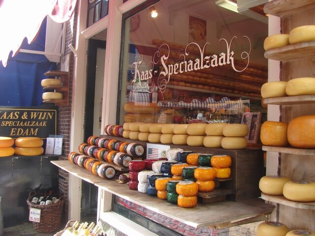
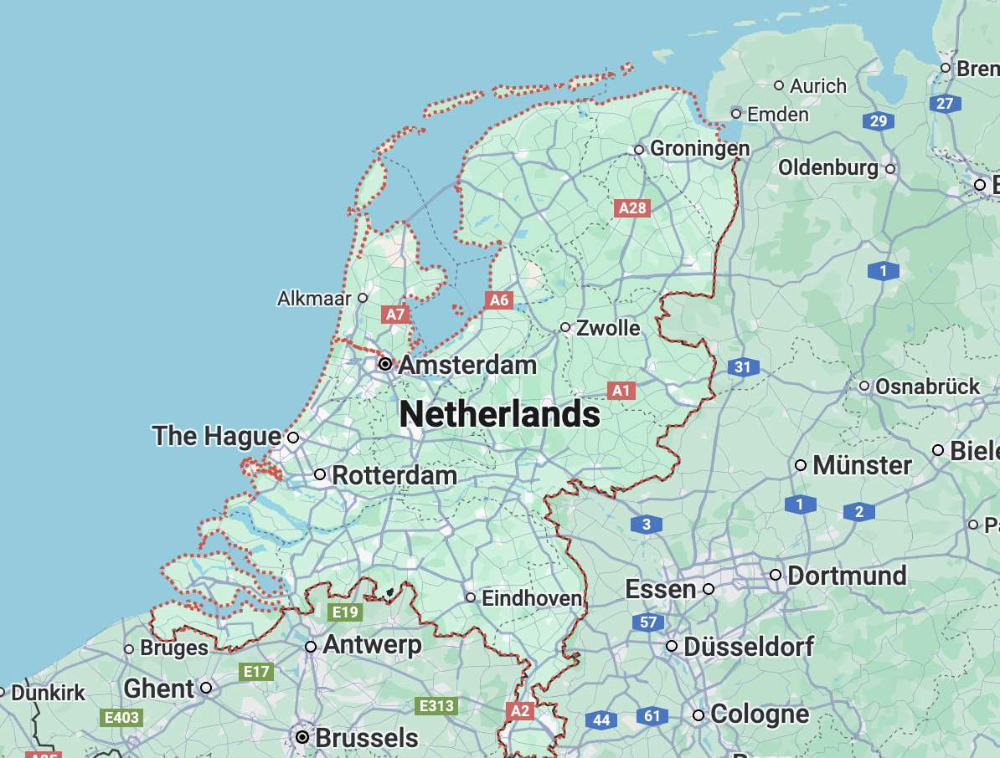
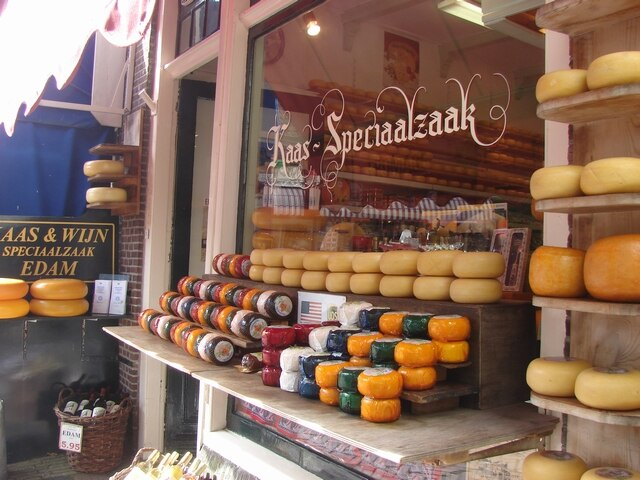
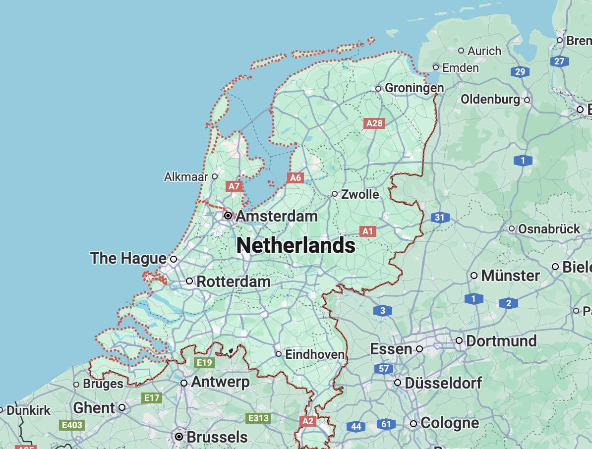

- Home
- Cheese
 



EDAM
- Region: Netherlands
- Milk: Cow
- Texture: Semi-Hard
Named after the town in North Holland, Edam is a semi-hard cheese made from the milk of Dutch bred cows. The sphere shaped cheese is coated with a characteristic bright red wax which protects the interior from contamination during exporting. Compared to other cheeses, Edam is low in fat content and the flavor becomes more complex and sharp as it ages.
More InfoRECOMMENDED

Gorgonzola

Edam

Camembert